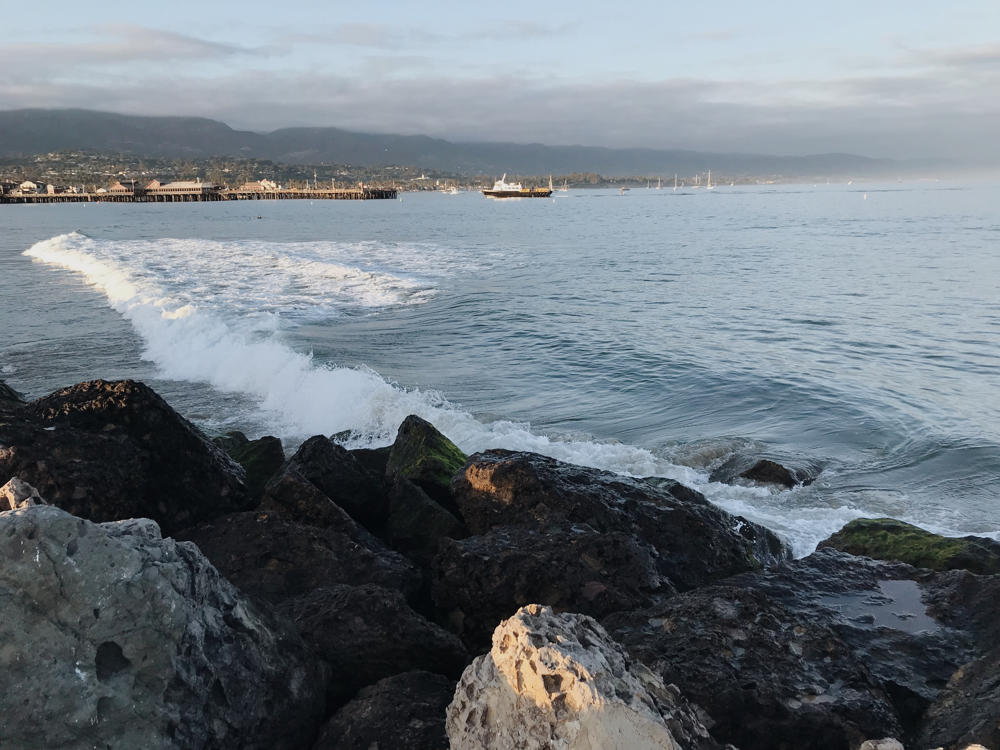
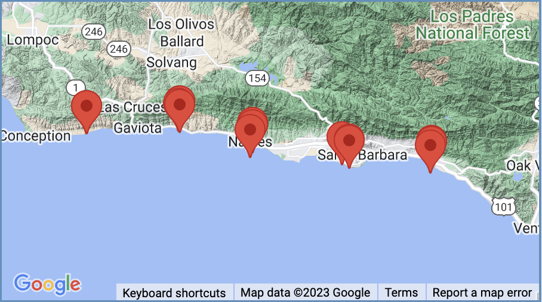
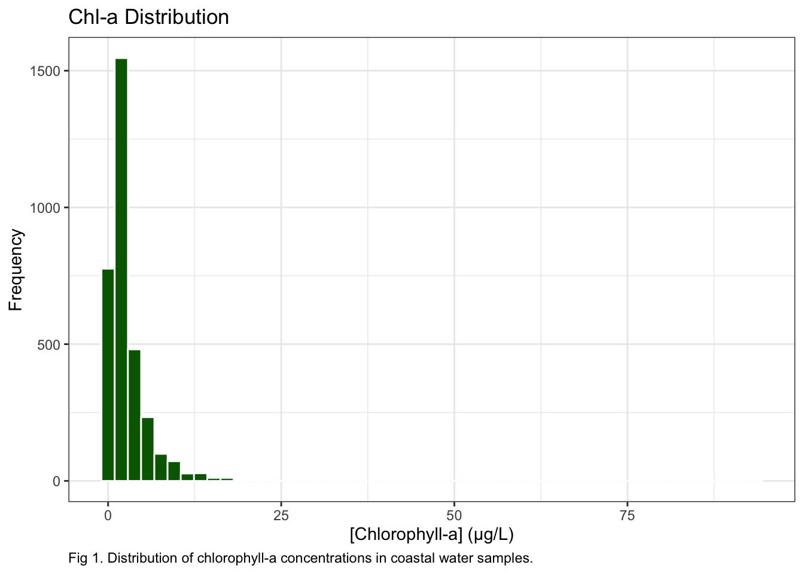
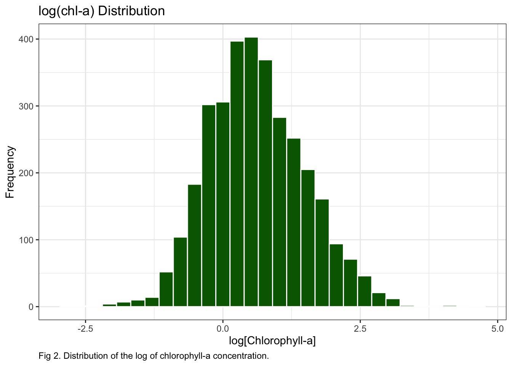
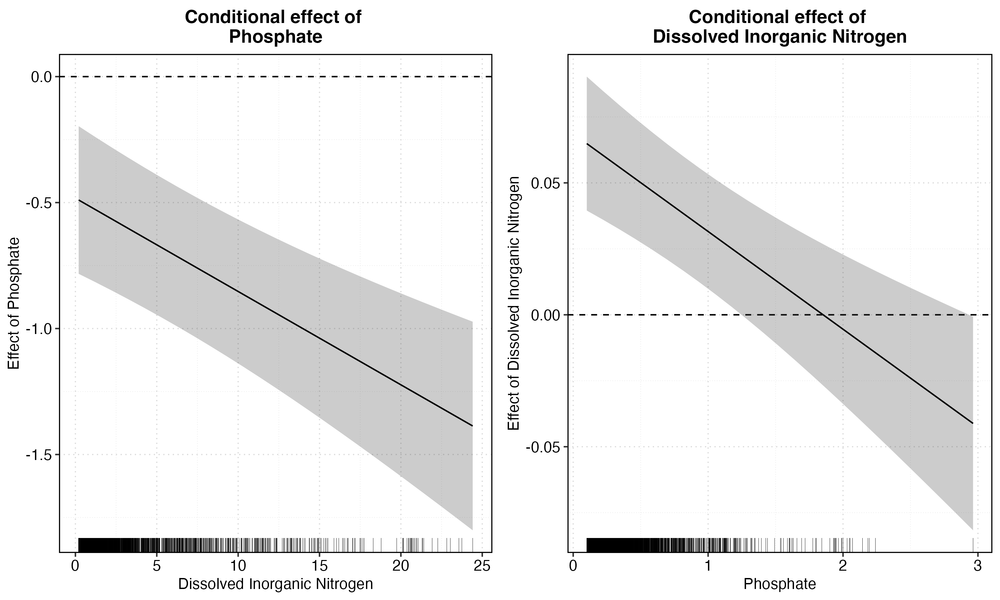

Relationship between cholorphyll-a and nutrients in the Santa Barbara Channel

Santa Barbara Coast
Background
Phytoplankton play a key role in both oceanic food webs and the global carbon cycle. Although they only make up 0.2% of the global primary producer biomass, phytoplankton are responsible for nearly half of Earth’s primary production (Field et al 1998). Every marine organism relies on phytoplankton directly or indirectly for fuel and through photosynthesis, phytoplankton convert inorganic carbon, CO2, into organic carbon. It is then essential to study them to understand how they can mitigate and/or be affected by climate change. Since all photosynthetically active phytoplankton use chlorophyll-a pigment to produce their own fuel, chlorophyll-a is commonly used as a proxy for phytoplankton biomass.
In order to grow and thrive, phytoplankton rely on certain nutrients–phosphate (PO4) and dissolved inorganic nitrogen (nitrate, nitrite, ammonium). It has been proven that on short timescales, such as weeks and months, the previously mentioned nutrients are dominant drivers of changes in chlorophyll-a concentration, with a directly proportional relationship (Blauw et al 2018).
Coastal ocean waters are teeming with life and are more productive compared to the open ocean, but are also most vulnerable to climate change (Sigman and Hain 2012). By growing our understanding of the chemistry and biology in these coastal areas, we can better protect and predict future changes due to climate change and ocean acidification.
While learning about the close relationship between chlorophyll-a and nutrients, I began to wonder if, with a large enough dataset, a statistically significant relationship could be characterized. I knew that my hometown, Santa Barbara, had a Long-Term Ecological Research project with years worth of open access coastal chemistry and nutrient data, so I set out to answer this question with their data.
Data
The Santa Barbara Coastal Long-Term Ecological Research program has been conducting monthly nearshore cruises along the Santa Barbra channel at 16 sites since 2000. Water samples are collected with a rosette sampler and multiple nutrients and water chemistry parameters are measured. The data are accessible to anyone on the Environmental Data Initiative or DataOne websites. Included in this dataset are measurements of chlorophyll-a, phosphate, nitrate, nitrite, and ammonium concentrations, which I used for my analysis.

SBC LTER sampling locations
Methods
Data loading, cleaning, and preparation
I imported the data via a URL leading to the DataOne website, but it could also be downloaded and stored locally.
Initial data cleaning was done in the same step as importing by piping. The initial data frame was relatively tidy, but needed certain values to be replaced with NAs: any 99999 values where data was missing and nutrient measurements labeled “BDL” for below detection level.
Since chlorophyll-a concentration is driven by phosphate and dissolved inorganic nitrogen, a new column was created with the sum of the components of dissolved inorganic nitrogen: nitrite, nitrate and ammonium. For more accurate sum totals, an intermediate data frame was created in order to convert the NA values to 0. Once the sums were calculated, any sums equaling zero were converted back to NAs and the dissolved inorganic nitrogen column was added via cbind() back to the original data frame. Lastly, a new dataframe was created with only the necessary variables for more efficient handling.
Code
bottle <-read_delim("https://cn.dataone.org/cn/v2/resolve/https%3A%2F%2Fpasta.lternet.edu%2Fpackage%2Fdata%2Feml%2Fknb-lter-sbc%2F10%2F27%2F572816525903a898f686df5b64eb3852",# BDL = below detection limit, so convert those to NAna ="BDL",show_col_types =FALSE) %>%clean_names() %>%# convert any 99999 value to NA values replace_with_na_all(condition =~.x ==99999) %>%# two rows at station Q2 which is not in the meta data and a positive longitude...filter(station !="Q2")# problems(bottle)# bottle <- read_delim(here("data", "LTER_monthly_bottledata_20220930.txt"), # BDL = below detection limit, so convert those to NA# na = "BDL") %>%
Code
# select preferred nitrogen columnsbottle_nutrients <- bottle %>%select(no2_no3_umol_l, ammonia_umol_l)# convert any NAs to 0 for more accurate sumsbottle_nutrients[is.na(bottle_nutrients)] <-0# create column DIN as sum of the nitrogen componentsbottle_nutrients <- bottle_nutrients %>%mutate(din_umol_l = no2_no3_umol_l + ammonia_umol_l)# convert and 0s back to NAbottle_nutrients$din_umol_l[bottle_nutrients$din_umol_l ==0] <-NA# create the data frame we want by adding DIN column and only selecting chl and nutrientsbottle_complete <- bottle %>%cbind(din_umol_l = bottle_nutrients$din_umol_l) %>%select(chl_a_ug_l, po4_umol_l, din_umol_l)
Data exploration
The plan was to run an ordinary least squares (OLS) multiple linear regression between chlorophyll-a and phosphate and dissolved inorganic nitrogen. Before proceeding, I explored the distribution of each of the variables and found that chlorophyll-a had some large outliers which created a positive skew and long right tail (Figure 1). In order to account for the outliers and lower the leverage of large values in the model, the log of chlorophyll-a concentration was used (Figure 2).
Code
ggplot(data = bottle_complete) +geom_histogram(aes(chl_a_ug_l), fill ="darkgreen", color ="white",bins =50) +labs(x ="[Chlorophyll-a] (\u03BCg/L)",y ="Frequency",title ="Chl-a Distribution",caption ="Fig 1. Distribution of chlorophyll-a concentrations in coastal water samples.") +theme_bw() +theme(plot.caption =element_text(hjust=0))

A new column was added, the log of chlorphyll-a concentration, and was utilized in the following regression model.
Code
# add log(chl-a) columnbottle_complete <- bottle_complete %>%mutate(log_chla =log(chl_a_ug_l))# check distributions againggplot(data = bottle_complete) +geom_histogram(aes(log_chla), fill ="darkgreen", color ="white") +labs(x ="log[Chlorophyll-a]",y ="Frequency",title ="log(chl-a) Distribution",caption ="Fig 2. Distribution of the log of chlorophyll-a concentration.") +theme_bw() +theme(plot.caption =element_text(hjust=0))

Regression
Now that the log of chlorophyll-a concentration lowers the leverage of large values, multiple linear regression was implemented to answer my question. Nitrogen and phosphorous are co-limiting nutrients and phytoplankton rely on a certain ratio of nutrients for optimal growth – which is known as the Redfield Ratio. Due to this, the response of phytoplankton to each nutrient can actually depend on the supply of the other (Frost et al 2023). Due to this phenomenon, an interaction term between phosphorous and dissolved inorganic nitrogen was included in the regression model.
Code
# multiple linear regression with interaction termmodel <-lm(log_chla ~ po4_umol_l + din_umol_l + din_umol_l:po4_umol_l, data = bottle_complete)# sjplot for clean output tablesjPlot::tab_model(model, digits =3, show.se =TRUE, title ="Table 1. Summary of log-linear multiple regression model with interaction term.", string.se ="SE")
Table 1. Summary of log-linear multiple regression model with interaction term.
log chla
Predictors
Estimates
SE
CI
p
(Intercept)
0.711
0.044
0.625 – 0.796
<0.001
po4 umol l
-0.482
0.150
-0.777 – -0.188
0.001
din umol l
0.069
0.013
0.042 – 0.095
<0.001
po4 umol l × din umol l
-0.037
0.008
-0.054 – -0.020
<0.001
Observations
2473
R2 / R2 adjusted
0.021 / 0.020
Coefficient Interpretations
This model produces a lot of outputs, so let’s interpret what each coefficient value means:
(Intercept): the exponential of the intercept (2.035) is the predicted concentration of chlorophyll-a in ug/L when the concentrations of both phosphate and dissolved inorganic nitrogen are zero.
po4 umol l: a one micro mole per liter increase in phosphate changes the concentration of chlorophyll-a by -48.2%, when there is no dissolved inorganic nitrogen in the water.
din_umol_l: a one micro mole per liter increase in dissolved inorganic nitrogen changes the concentration of chlorophyll-a by 6.9%, when there is no phosphate in the water.
po4 umol l x din umol l: Since both parameters in the interaction term are continuous variables, this coefficient describes the marginal effect of both nutrients on each other’s slope of their relationship with log(chlorophyll-a):
effect of phosphate:-0.48 + -0.04*DIN
effect of nitrogen: 0.07 + -0.04*PO4
Marginal effects
Since the interaction is between two continuous variables, the slope of one nutrient’s relationship with chlorphyll-a is conditional on the concentration of the other. This is called the marginal effect. We can actually plot the marginal effects of phosphate and nitrogen on each other to better visualize:
 Fig 3. Marginal effects of phosphate (left) and dissolved inorganic nitrogen (right).
Discussion
All of the coeefficients of the regression model are significant at a significance level of \(\alpha = 0.01\) (Table 1). Therefore this relationship between chlorophyll-a and phosphate and dissolved inorganic nitrogen can be considered statistically significant. However, when investigating the relationship between the two nutrients, phosphate and dissolved inorganic nitrogen are colinear (Figure 4). Due to this, the coefficients in Table 1 must be considered with confidence because the model could be very sensitive to changes in the nutrient concentrations. Additionally, although the coefficients may appear significant, the adjusted \(R^2\), 0.02, indicates that these nutrients explain very little of the total variability in chlorphyll-a.
Although nutrients play a large role in chlorophyll-a concentration, and therefore phytoplankton biomass, there are other drivers with high importance including temperature and available light. Future work should include isolating and controlling for temperature and light availability to better characterize the relationship between chlorophyll-a and nutrients. Once a better model fit is constructed, further work could include investigating the affect of site and depth in the channel have on this relationship.
References
Blauw, A. N., E. Benincà, R. W.P.M. Laane, N. Greenwood and J. Huisman. 2018. Predictability and environmental drivers of chlorophyll fluctuations vary across different time scales and regions of the North Sea. Progress in Oceanography 161: 1-18. ISSN 0079-6611. doi:10.1016/j.pocean.2018.01.005.
Field, C. B., M. J., Behrenfeld, J. T., Randerson, and P. Falkowski.1998. Primary production of the biosphere: Integrating terrestrial and oceanic components. Science 281: 237-240. doi:10.1126/science.281.5374.237
Frost, P.C., Pearce, N.J.T., Berger, S.A., Gessner, M.O., Makower, A.K., Marzetz, V., Nejstgaard, J.C., Pralle, A., Schälicke, S., Wacker, A., Wagner, N.D. and Xenopoulos, M.A. (2023), Interactive effects of nitrogen and phosphorus on growth and stoichiometry of lake phytoplankton. Limnol Oceanogr, 68: 1172-1184. https://doi.org/10.1002/lno.12337
Sigman, D. M. & Hain, M. P. (2012) The Biological Productivity of the Ocean. Nature Education Knowledge 3(10):21. https://www.nature.com/scitable/knowledge/library/the-biological-productivity-of-the-ocean-70631104/ Accessed December 15, 2023
Citation
BibTeX citation:
@online{herbst2023,
author = {Herbst, Amanda},
title = {Relationship Between Chlorophyll-a and Nutrients in the
{Santa} {Barbara} {Channel}},
date = {2023-10-23},
url = {https://amandaherbst.github.io/blog/2023-12-15-eds222-chl-nutrients/},
langid = {en}
}